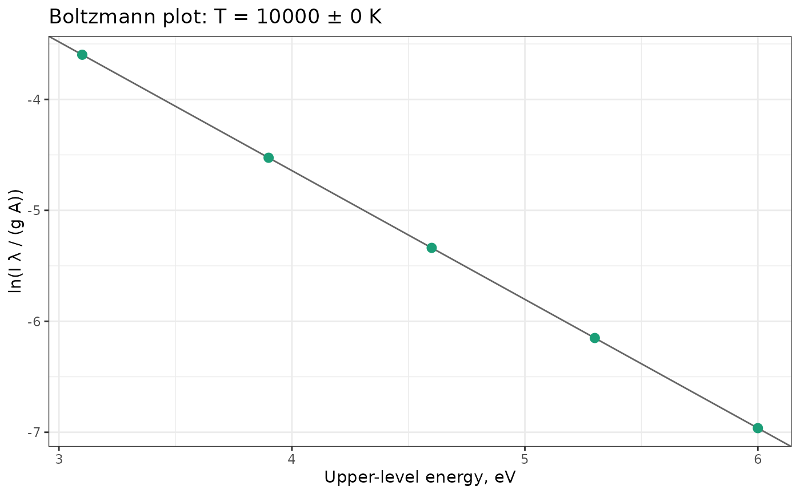

Estimates the excitation temperature of a plasma in local thermodynamic equilibrium (LTE) from the intensities of several lines of the same species, by a Boltzmann plot.
Arguments
- lines
A data frame with one row per line and columns
intensity(integrated line intensity),wavelength(nm),Aki(transition probability, s\(^{-1}\)),gk(upper-level degeneracy) andEk(upper-level energy, eV).- units
The units of
intensity:"energy"(default; radiance or energy-calibrated counts) or"photons"(photon counts).
Value
An object of class specproc_boltzmann, a list with
temperatureandtemperature_se: the temperature and its standard error, in K;r_squared: the coefficient of determination of the fit;points: a tibble with the abscissax(eV) and ordinateyof each line;fit: thelmfit ofyonx.
Use plot_boltzmann() to draw the plot.
Details
In LTE, the integrated intensity of a line emitted from an upper level of
energy \(E_k\) and degeneracy \(g_k\), with transition probability
\(A_{ki}\) and wavelength \(\lambda\), satisfies
$$\ln\frac{I\lambda}{g_k A_{ki}} = -\frac{E_k}{k_B T} + C$$
for intensities in energy units, or
\(\ln(I / g_k A_{ki})\) for photon counts (units = "photons"). A
least-squares line through the points gives the temperature from its
slope, \(T = -1/(k_B\,\mathrm{slope})\), and its standard error from
that of the slope.
The intensities must be corrected for the spectral response of the
instrument, and the lines must be optically thin (see
self_absorption()). A wide range of upper-level energies gives a more
precise temperature. Atomic data (\(A_{ki}\), \(g_k\), \(E_k\)) can
be taken from the NIST Atomic Spectra Database
(https://physics.nist.gov/PhysRefData/ASD/lines_form.html).
References
Cristoforetti, G., De Giacomo, A., Dell'Aglio, M., Legnaioli, S., Tognoni, E., Palleschi, V., Omenetto, N. (2010). Local thermodynamic equilibrium in laser-induced breakdown spectroscopy: beyond the McWhirter criterion. Spectrochimica Acta Part B, 65(1):86-95.
Examples
# Lines of a hypothetical species emitted by a plasma at 10000 K
kB <- 8.617333262e-5
lines <- data.frame(
wavelength = c(400, 420, 450, 480, 500),
Aki = c(1e8, 5e7, 2e7, 8e7, 3e7),
gk = c(3, 5, 7, 5, 9),
Ek = c(3.1, 3.9, 4.6, 5.3, 6.0)
)
lines$intensity <- with(lines, gk * Aki / wavelength * exp(-Ek / (kB * 10000)))
fit <- boltzmann_plot(lines)
fit
#> Boltzmann plot (5 lines)
#>
#> Temperature: 10000 +/- 0 K
#> R-squared: 1
plot_boltzmann(fit)
